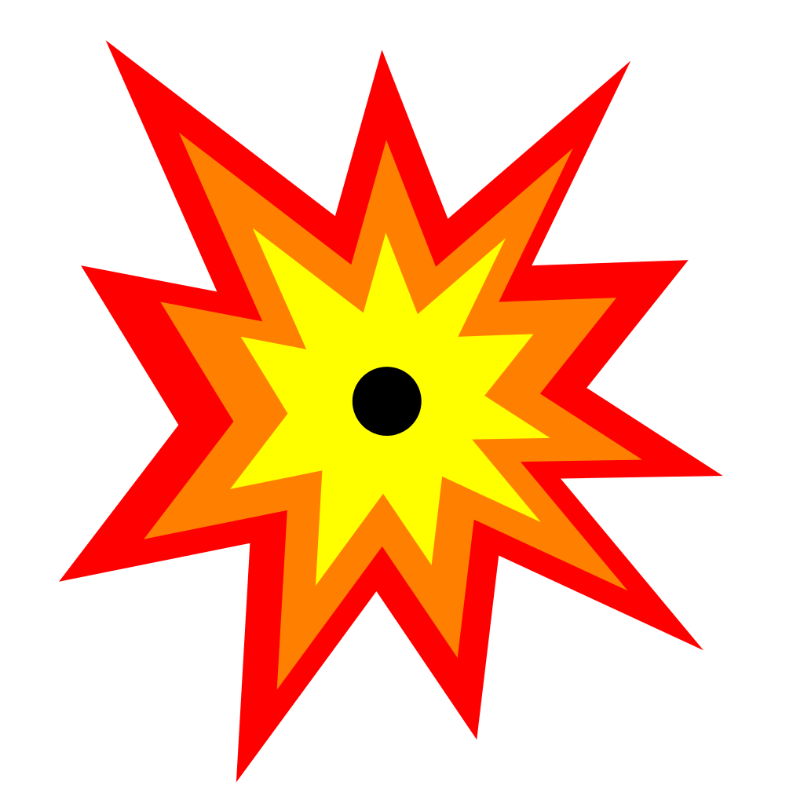
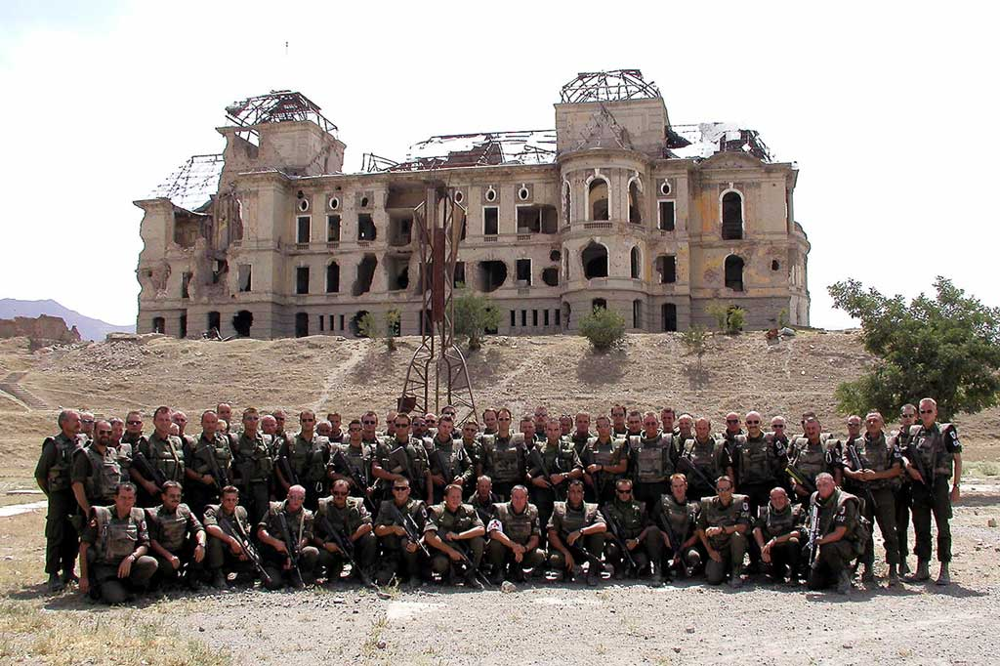

Штурм дворца Амина
27 декабря 1979 года состоялась успешная операция сил специального назначения - отрядов «Гром» и «Зенит» КГБ СССР (спецназ «Альфа» и «Вымпел»). Операция началась с высадки в аэропорту Кабула. Одна группа направилась в город, другая - к дворцу. Здание дворца было построено в форме буквы «П» и охранялось со всех сторон. Хоть подход к дворцу был замечен, спецназ был готов к бою. Боевые машины с десантом начали атаку. Вскоре второй этаж загорелся. Бойцы продвигались вперед, используя гранаты и огонь. Противник был быстро уничтожен. Амин погиб в результате взрыва. После боя оставшиеся силы сдались. В результате пятеро спецназовцев и девять десантников погибли, 338 человек были ранены.
Card title